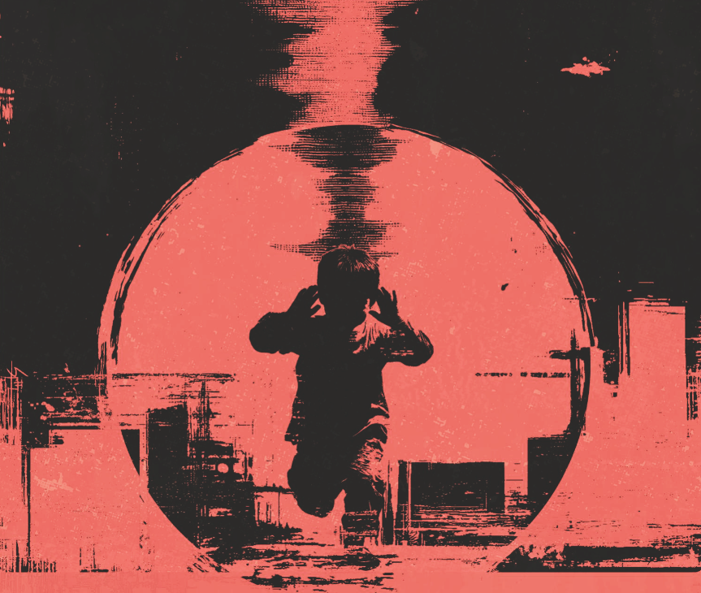

Florence Jenkins Project
Muzyka na pokręcone czasy.
Album · 10 czerwca 2026 · 8 utworów
Od zespołu…
Kilka lat temu, tuż po premierze poprzedniego albumu, jeden z dziennikarzy zapytał nas o plany na przyszłość. Odpowiedzieliśmy: „może nagramy płytę folkową". Jasna, akustyczna odtrutka na pandemiczną duszność. Tak miało być.
Ale świat zechciał inaczej. Nagle teksty, które w szkole czytaliśmy jako świadectwo „słusznie minionego" stulecia, stały się przerażająco aktualne. Podzieleni, gniewni, systematycznie odzierani z empatii. Zamiast końca historii, dostaliśmy zestaw pytań natrętnych o wiele bardziej niż słynne „jak żyć, panie premierze?"
Tytułowe „Nie słuchaj bomb" to podpowiedź, którą dajemy przede wszystkim sami sobie. Tych bomb – zarówno fizycznych, jak i medialnych – nie sposób nie usłyszeć. Wybuchają z ekranów i głośników, padają w rozmowach, lądują w myślach próbując narzucić nam dyktat strachu, przemocy i pogardy. Czy musimy się temu poddawać? Czy potrafimy słysząc — nie być posłuszni?
Ta płyta nie jest folkową odtrutką na pandemię. To 8 piosenek na zdumiewająco pokręcone czasy. Jest w nich nasz mrok, jest niezgoda i opór, ale przede wszystkim – są okruchy nadziei. Pozostaje wiara, że przesłanie tego albumu szybko przestanie być aktualne. A muzyka? Muzyka niech zostanie.
Tracklista
Zespół
Florence Jenkins Project to autorski zespół rockowy działający od 2008 roku. Znakiem rozpoznawczym grupy są niesztampowe teksty oraz aranżacje łączące przestrzenne brzmienia z wyrazistymi riffami i pulsem rockowego grania.
Album „Nie słuchaj bomb" to trzeci pełny longplay zespołu, po Antymetafizyce (2018) i III x III / życie i inne katastrofy (2020). Muzycznie łączy rock, elementy etno, subtelną elektronikę i wyraziste melodie z tekstami autorskimi oraz dialogiem z poezją Baczyńskiego i Gałczyńskiego.
Muzyka FJP była obecna m.in. w Polskim Radiu Program 1, Radiu Fama, Radiu Dzieciom i Radiu Płońsk. Debiutancka Antymetafizyka znalazła się w pierwszej trójce najlepszych albumów polskiego rocka 2018 roku.
Produkcja
Patronat medialny